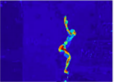
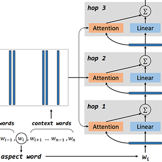

arXiv preprint, 2019
A survey of supervised, weakly-supervised, and unsupervised approaches to predicting dense depth from a single RGB image, comparing methods and outlining open directions.
Evaluation of agentic AI systems — generation quality, tool-use, and responsible AI.
Senior Machine Learning Researcher, Apple · Seattle, WA
I am a machine learning researcher working on the evaluation of agentic AI systems. When assistants move beyond single-turn answers into long-horizon, multi-step tool-use with error recovery, conventional metrics — correctness, completeness, relevancy — no longer capture quality. My work develops compound measures of agent behavior such as user utility, user-perceived defects, and multi-tool planner evaluation, and a complementary line on cost- and latency-aware routing that escalates only the hardest tasks to frontier models while holding generation quality steady.
I am a Senior ML Researcher in Apple's Human-Centered AI organization, where I scale agentic evaluations for Apple Media Products. Previously I was an Applied Scientist at Amazon, building multi-modal fraud detection, large-scale insight generation, and LLM-driven conversational systems across the Returns & Recommerce and Seller Experience Innovation orgs. I hold an M.S. in Computer Science from the University of Illinois at Chicago, where I was advised by Xinhua Zhang and focused on machine learning and computer vision.
Methods for measuring multi-turn, multi-tool agents beyond single-turn correctness — capturing user utility, user-perceived defects, and the quality of multi-tool planning and error handling. Applied to scale agentic evaluation for Apple Media Products.
Routing strategies that send only the hardest tasks to frontier models, reducing escalation rate and serving cost while maintaining accurate, high-quality generations.
At Amazon, multi-modal fraud detection, large-scale insight generation, and LLMs for conversational returns, plus evaluation of generative-AI seller listings and Seller Assistant.
Foundational research on invariant kernels for few-shot learning and widely-read survey work — the Monocular Depth Estimation survey has been cited 200+ times and remains a reference entry point to the area.
Citation counts via Google Scholar (266 total citations; h-index 4).
A survey of supervised, weakly-supervised, and unsupervised approaches to predicting dense depth from a single RGB image, comparing methods and outlining open directions.

A survey of action localization in video — determining what action is performed, and when and where — across algorithms, datasets, and the most promising directions.

An exploration of pre-processing, features, and memory-network methods for classifying sentiment toward a specific aspect within a sentence.
A comparison of neural and universal style-transfer approaches, focused on real-time transfer and generalization to unseen styles.
Peer reviewer for workshops at flagship machine-learning venues (ICML, KDD).
Scaling agentic evaluations for Apple Media Products.
Multi-modal fraud detection, large-scale insight generation, and LLMs for conversational returns; evaluation of generative-AI listings and Seller Assistant.
Image classification and segmentation for automotive damage assessment.
Machine learning & computer vision; advised by Xinhua Zhang. Thesis: Invariant Kernels for Few-shot Learning (Outstanding Thesis Award).